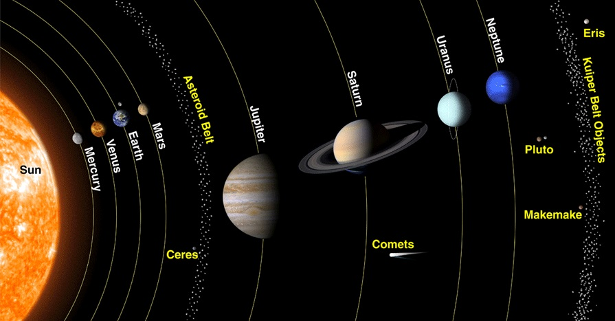
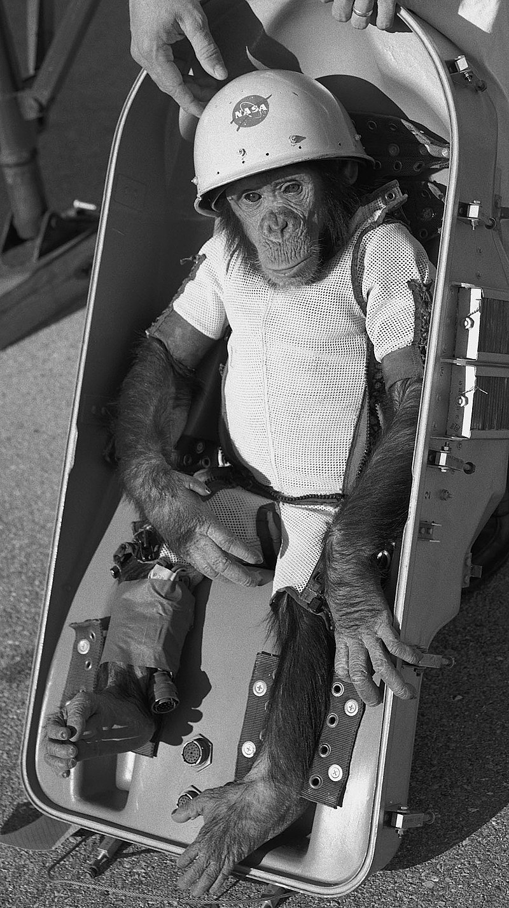

El cinturón de asteroides es un disco circunestelar del sistema solar
que se encuentra entre las órbitas de Marte y Júpiter. Alberga multitud
de objetos astronómicos, denominados asteroides, y al planeta enano
Ceres. Esta región también se denomina cinturón principal con la
finalidad de distinguirla de otras agrupaciones de cuerpos menores del
sistema solar, como el cinturón de Kuiper o la nube de Oort.
Más de la mitad de la masa total del cinturón está contenida en los
cinco objetos de mayor masa:
Ceres, el más
masivo de todos y el único planeta enano del cinturón, tiene un diámetro
de 950 km y una masa del doble que Palas y
Vesta juntos. La
mayoría de cuerpos que componen el cinturón son mucho más pequeños. El
material del cinturón, apenas es un 4 % de la masa de la Luna, se
encuentra disperso por todo el volumen de la órbita, por lo que sería
muy difícil chocar con uno de estos objetos en caso de atravesarlo. En
promedio, cada asteroide importante está separado de su vecino por una
distancia de cinco millones de kilómetros.

La NASA ha lanzado con éxito más de 200 vuelos tripulados. Dos
terminaron en fracaso, causando la muerte de toda la tripulación:
STS-51-L ( el desastre del Challenger ) en 1986, y STS-107 ( el desastre
de Columbia ) en 2003. (El Apolo 1 en 1967 perdió tres miembros de la
tripulación pero nunca lanzado.)
Algunas misiones notables de la NASA
-
Mercury /
RedStone 2 (1961)
- Primer vuelo suborbital estadounidense con un ser vivo. Ham, el
chimpance.
-
Mercury / Redstone 3 (1962)
- Primer estadounidense en vuelo suborbital, Alan B. Shephard.
-
Gemini 4 (1965) -
Primer paseo espacial de Estados Unidos, realizado por Edward White,
duró 22 minutos
-
Apolo
1 (1967)
- El módulo se incendió durante unas pruebas del cohete en tierra, y
la escotilla de la nave no se pudo abrir a tiempo. Murieron los 3
astronautas.
-
STS-51-L (1986)
- Vigesimo quinto vuelo del programa STS. El transbordador espacial
Challenger se desintegró 73 segundos tras el lanzamiento, provocando
la muerte de los siete miembros de la tripulación.
-
STS-107 (2003)
- El accidente del transbordador espacial Columbia se desintegró sobre
los estados de Texas y Luisiana en su reingreso a la atmósfera
terrestre, muriendo los siete miembros de la tripulación.

Muy lejos, más allá de las montañas de palabras, alejados de los países
de las vocales y las consonantes, viven los
textos simulados. Viven aislados en casas de letras, en la
costa de la semántica, un gran océano de lenguas. Un riachuelo llamado
Pons fluye por su pueblo y los abastece con las normas
necesarias. Hablamos de un país paraisomático en el que a uno le caen
pedazos de frases asadas en la boca. Ni siquiera los
todopoderosos signos de puntuación dominan a los textos
simulados; una vida, se puede decir, poco ortográfica.
In una terra lontana, dietro le montagne Parole, lontani dalle terre di
Vocalia e Consonantia, vivono i testi casuali. Vivono
isolati nella cittadina di Lettere, sulle coste del
Semantico, un immenso oceano linguistico. Un
piccolo ruscello chiamato Devoto Oli attraversa quei
luoghi, rifornendoli di tutte le regolalie di cui hanno bisogno. È una
terra paradismatica, un paese della cuccagna in cui
golose porzioni di proposizioni arrostite volano in bocca a
chi le desideri. Non una volta i testi casuali sono stati dominati
dall’onnipotente Interpunzione, una vita davvero non ortografica.
Er hörte leise Schritte hinter sich. Das bedeutete nichts Gutes. Wer
würde ihm schon folgen, spät in der Nacht und dazu noch in dieser engen
Gasse mitten im übel beleumundeten Hafenviertel? Gerade
jetzt, wo er das Ding seines Lebens gedreht hatte und mit der Beute
verschwinden wollte! Hatte einer seiner zahllosen Kollegen dieselbe Idee
gehabt, ihn beobachtet und abgewartet, um ihn nun um die
Früchte seiner Arbeit zu erleichtern? Oder gehörten die Schritte hinter
ihm zu einem der unzähligen Gesetzeshüter dieser Stadt, und die
stählerne Acht um seine Handgelenke würde gleich zuschnappen? Er konnte
die Aufforderung stehen zu bleiben schon hören. Gehetzt sah
er sich um. Plötzlich erblickte er den schmalen Durchgang.